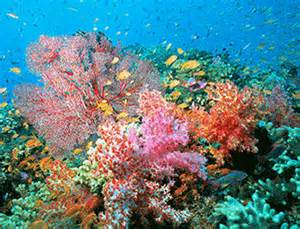

Il corallo
Insieme a spugne, alghe e altri animali sessili (ancorati al fondale) impostano l'aspetto delle barriere. I coralli sono costituiti da colonie di piccoli polipi, costituiscono la base di questo ambiente sia dal punto di vista costitutivo che dal punto di vista della catena alimentare.
La loro crescita e il continuo avvicendarsi delle generazioni dei polipi è infatti tale da poter creare isole e delle lagune in mari profondi, modificando sia il fondo sia le coste (ricoperte di sabbia finissima, frutto dell'erosione marina sui coralli e dell'azione di alcuni pesci che si cibano dei polipi).
Esistono molte specie di coralli, distinguibili dai diversi colori e dalle peculiari strutture che creano, ma i coralli della barriera corallina tendono ad avere in comune la simbiosi con alghe unicellulari dette zooxantelle (fatto che determina la necessità di trovarsi in luoghi luminosi), dalle quali ricavano buona parte del loro nutrimento, in cambio della protezione offerta dagli scheletri della colonia e da tentacoli urticanti dei polipi.